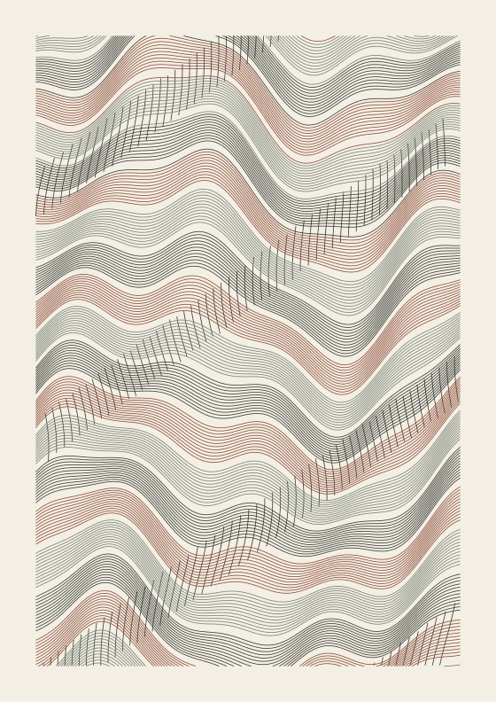
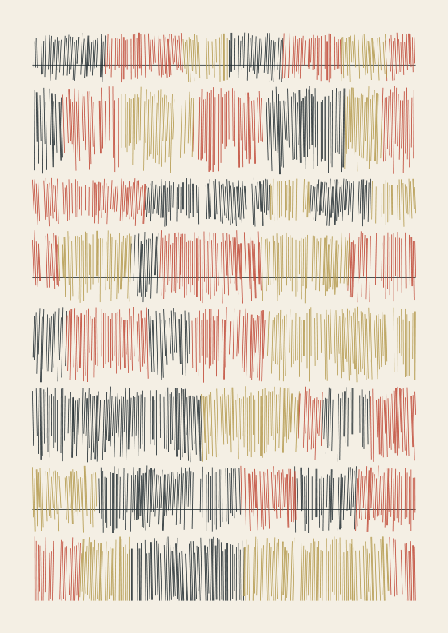
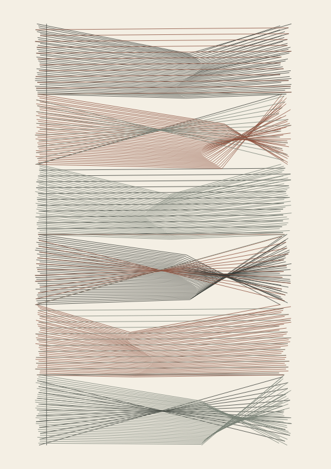
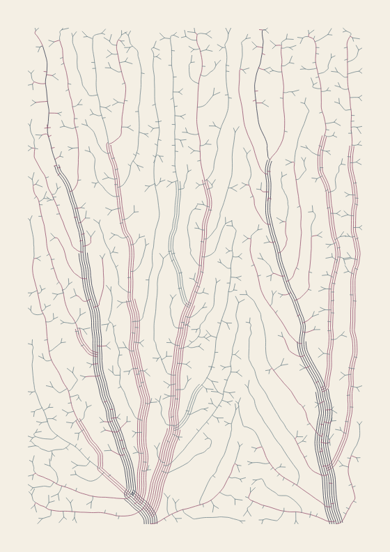
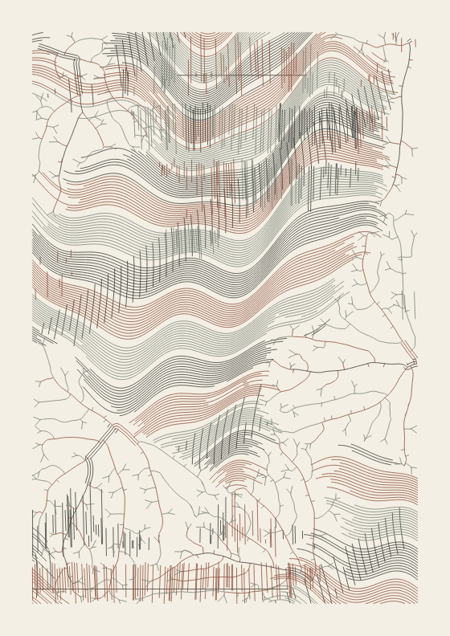
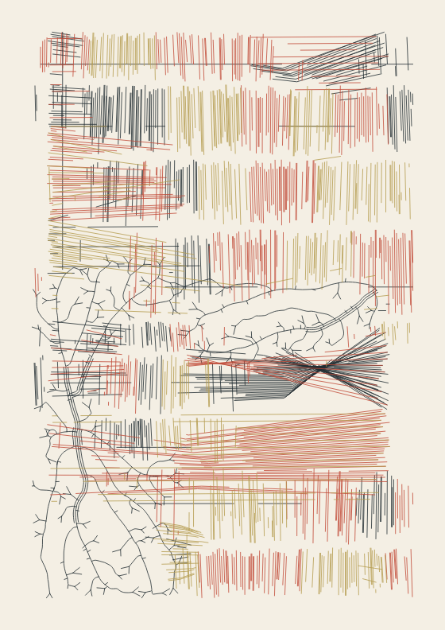
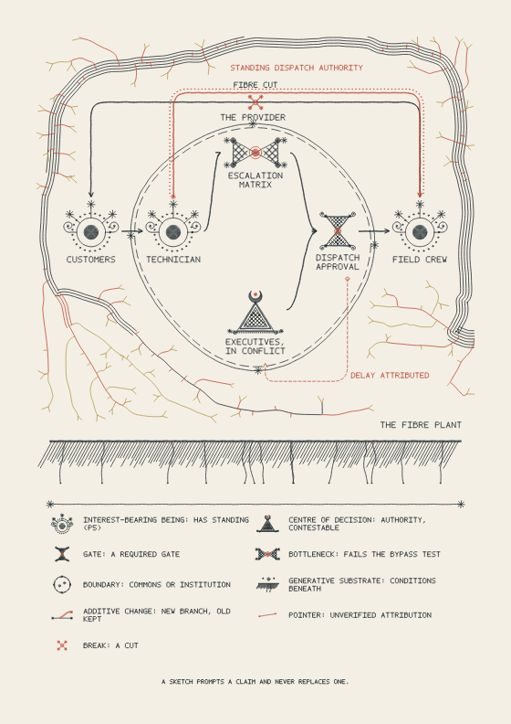

The SVG has physical dimensions in millimetres and contains stroked paths grouped by pen. It has no embedded raster, filled areas, live text, or paper background.
Time estimates use line length, travel length, and a lift delay. Acceleration, homing, pen changes, and controller overhead are excluded.
Save a recipe to recreate a drawing. Recipes from version 0.1 load as a single motif.
Technical notes.